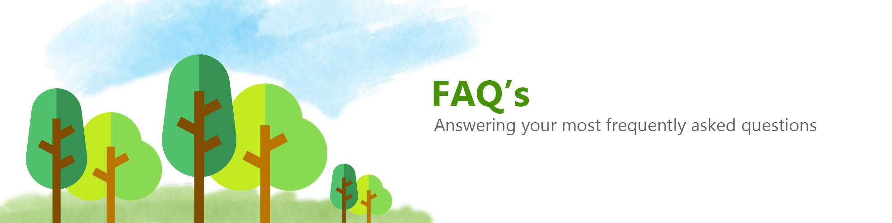

We are a Foundation who help planting trees over afriqua ,We Have benefits from advertisements and financial donation from visitors to treat arid areas.

We are a Foundation who help planting trees over afriqua ,We Have benefits from advertisements and financial donation from visitors to treat arid areas.
There are many ways that trees are beneficial to both people and the environment: Trees are habitat for biodiversity; Trees create much of the planet’s oxygen; and, Trees help combat climate change – the list is nearly limitless, but we focus on the role trees play in agroforestry and in helping farming families improve their land quality and productivity. Agroforestry integrates trees into agriculture and landscapes, a model that is particularly appropriate for resource poor farmers in developing countries. In addition to providing fruits, berries, and nuts, trees provide environmental services that are essential for families in the developing world: they can improve the fertility of degraded soils (through nitrogen fixation), prevent wind and soil erosion (thereby also contributing to improved fertility), increase water penetration into underground aquifers, and contribute to improvements in the growing environment. Trees help to lessen the wind that might affect crops, cool off ground temperatures, and trap moisture and nutrients in the soil so that food crops grow better in the improved microclimate.
No. In the degraded and deforested zones where we operate, we cannot simply plant the types of trees that used to be there. As trees are lost, the growing conditions on a piece of land change. The trees that once stood there cannot regrow in harsh, direct sunlight. We have to find other trees with pioneer qualities that tolerate harsh, full sunlight and arid conditions. After the pioneer species begin to cool the land and improve soil quality we have more success growing a diverse array of fruit trees and hardwoods. There are times when the best pioneer trees for a given landscape and climate are not native, but they are generally naturalized, meaning they already exist and grow in that country. For us, the primary concern is not indigenous vs. non-native, but rather, of invasiveness. Whether a species is invasive or not is a complex issue; the same species may or may not be considered invasive, depending on local environmental conditions. We work with local forestry specialists and the communities themselves to identify appropriate trees species for each place we operate. Further, many of the most economically beneficial species can be both non-native and non-invasive. For example, we plant many orange, mango, and banana trees every year at some of our project sites in Africa, even though they are not indigenous.
Water is a critical limiting factor in our line of work, so we have come up with many ways to mitigate the challenges faced. For example, when we select communities, we prioritize those that either do not have a history of water shortages in their well or just recently gained access to running water. When we train people in arid lands to establish nurseries, we have found ways for farmers to grow seedlings by using minimal amounts of water, even gray water which is left over from other household tasks. When designing Forest Gardens, we often have to select drought-resistant trees which survive on little water, and we plant windbreaks to minimize the drying effect – evapotranspiration as it is called – that dry winds have on the land. We time our nurseries so that seedlings are planted at the beginning of every rainy season, maximizing the amount of time they get rained on as most trees we plant are not watered throughout the dry season.
We have developed a world-class monitoring and evaluation process that meticulously tracks the number of trees planted, where, and by whom. This data is digitally collected and processed for our team to locate problems and success in each Forest Garden, so that they can be attended to. Part of this process includes interviewing each individual farmer at least twice a year to determine how their Forest Garden is producing, any issues that need to be mitigated, and if they are having success at the market.